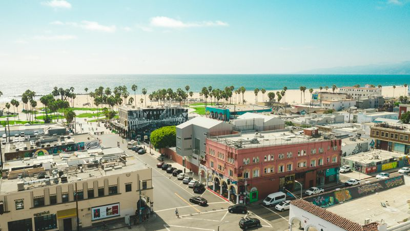

◆ NYU GIS DAY WINNERREC 0012024
Life Lines — Emergency Care Access in Los Angeles
34.05° N · 118.24° W · LA COUNTY, USA
Network-based drive-time analysis for 90+ hospitals across LA County, identifying access gaps for 2.8M residents beyond 15-minute trauma response zones. Findings supported spatial equity recommendations — and won the NYU GIS Day competition for geospatial storytelling.